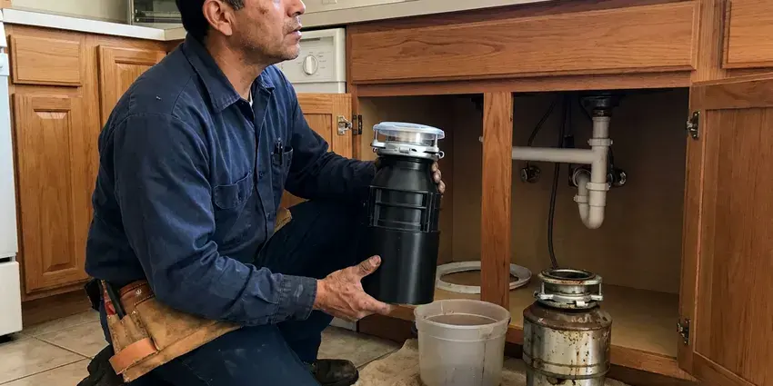

Insinkerator Installation in Indio, CA
For skilled Insinkerator installation in Indio, CA, trust FKM Plumbing to get the job done right, making sure your kitchen plumbing works perfectly.
- Same-Day InSinkErator Installs
- Factory-Trained Mounting Techniques
- Expert, licensed plumbers
- Old Unit Haul-Away Included

Need a New Insinkerator Installed in Indio, CA?
Our team is ready to provide quality installation for your kitchen's new Insinkerator.
Your Local Source for Insinkerator Installation in Indio, CA
FKM Plumbing specializes in professional Insinkerator installation, helping homeowners and businesses in Indio, CA upgrade their kitchens with dependable waste disposal units. We handle all models, providing proper wiring, plumbing connections, and testing for optimal performance and safety.
Our expertise includes:
- Complete testing for leaks and function
- Dishwasher drain knockout removal and air gap connection
- Precise electrical and plumbing connections

Additional Kitchen Plumbing Services in Indio, CA
Our kitchen plumbing services in Indio, CA cover sinks, disposals, dishwashers, and grease traps so your kitchen stays clean, safe, and fully functional.




Garbage Disposal Replacement in Indio


Customers
Why Choose FKM Plumbing for Insinkerator Installation in Indio, CA?
Choosing FKM Plumbing for your Insinkerator installation means choosing reliability and professionalism. We focus on meticulous execution to prevent future issues and ensure your unit performs as expected.
- Local Expertise, Our plumbers are familiar with Indio, CA plumbing codes and common home layouts, ensuring compliant and efficient installations.
- Tested Before Leaving, We run water, grind a test load and check every joint for leaks.
- Customer Satisfaction, Your satisfaction is our priority, and we stand by our work with solid guarantees and responsive service.
Citywide Coverage
From downtown to the outer edges of Indio, we provide complete Insinkerator installation services. Our local knowledge means we understand the plumbing needs of homes across the whole area.
Experienced Team
Our plumbers have installed hundreds of InSinkErator units and know the quirks of each mount design. They can swap a Badger 5 in under an hour and handle tight cabinets without damaging your sink.
Safety-First Approach
Safety is the top priority in every Insinkerator installation, especially regarding electrical connections and drain line integrity. We follow strict safety protocols to protect your home and our technicians.
Trusted Certified Indio Plumbing Services Professionals
At FKM Plumbing, we take pride in providing certified plumbing services throughout Indio, CA. Backed by leading industry credentials, our experienced plumbers combine technical skill with genuine customer care. Whether it is repair, installation, or maintenance, we follow strict safety and quality standards to deliver lasting results you can trust.
Call Us Now PHCC Plumbing Contractor Recognition
PHCC Plumbing Contractor Recognition Better Business Bureau (BBB) Accreditation
Better Business Bureau (BBB) Accreditation Angi Certified Pro
Angi Certified Pro ISO 9001 Quality Management Certification
ISO 9001 Quality Management CertificationDependable Insinkerator Installation Services in Indio, CA
Insinkerator with Air Switch Installation in Indio
For added convenience and a cleaner look, many homeowners choose an Insinkerator with an air switch. This allows the disposal to be activated by pressing a button mounted on the countertop, rather than a traditional wall switch. We expertly install these air switches, integrating them seamlessly with your new Insinkerator unit. This includes drilling the countertop if necessary and making a safe, reliable connection in your Indio kitchen.

Insinkerator Badger Series Installation in Indio, CA
The Insinkerator Badger series is a popular, dependable choice for many Indio, CA homeowners. We specialize in installing all Badger models, from the Badger 1 to the Badger 5. Our service ensures these units are correctly mounted, wired, and connected to your drain system. We pay close attention to the individual requirements of each Badger model, guaranteeing efficient performance and preventing common issues like leaks or loose connections.
Standard Insinkerator Installation in Indio
Our standard installation service covers the setup of new Insinkerator garbage disposals in existing kitchen sink drain lines. This includes connecting the unit to your plumbing, wiring it to an existing electrical outlet or switch, and making sure all seals are watertight. We firmly secure the mounting assembly to prevent vibration and noise, frequent problems with improper installation. Our team also verifies the power source meets the unit's requirements, which is crucial for safe and efficient operation in Indio homes.
Insinkerator Evolution Series Installation in Indio
For those seeking advanced grinding technology and quieter operation, the Insinkerator Evolution series is an great option. Our plumbers are experts in installing Evolution models like the Essential, Compact, and Excel. These units often require specific electrical considerations and careful plumbing connections due to their larger size and more complex features. We make sure your Evolution series disposal operates at peak efficiency and with minimal noise in your Indio kitchen.
Insinkerator Batch Feed vs. Continuous Feed Installation in Indio
We install both batch feed and continuous feed Insinkerator models in Indio homes. Batch feed disposals operate only when the stopper is in place, offering a safety advantage, while continuous feed models run as long as the switch is on. Our plumbers can recommend the best option for your lifestyle and kitchen usage, then perform the installation with precision, ensuring the appropriate electrical connections and switch mechanisms are correctly integrated for your chosen model.
InSinkErator Installation Cost Comparison in Indio, CA
A basic Badger 5 install with a cord kit usually costs less than a premium Evolution Excel installation. Labor is similar for most swaps, but first-time installs cost more because of new flange work and electrical runs. We give you an upfront price that includes the unit, labor and haul-away. We also compare horsepower, sound levels and warranty length side by side. That way you can choose the model that fits your budget and cooking habits.
Septic-Friendly Disposal Installs in Indio, CA
Homes on septic systems need a disposal that does not overload the tank. Rocky ground, steep lots, and limited space can make drain field repairs complicated, sometimes requiring engineered septic systems. InSinkErator's Septic Assist model injects an enzyme solution to help break down food waste. We install the unit, mount the enzyme cartridge and explain how often to replace it. We also talk through scraping habits that keep solids out of the tank. This helps protect your drain field and extends time between pump-outs.

Evolution Series Upgrades in Indio, CA
Evolution models like the Compact, Septic Assist and Excel use multi-stage grinding and extra sound insulation. They break down fibrous foods such as celery and corn husks that can jam lighter units. We install Evolution disposals for families who cook often and want a quieter kitchen. Because these units are taller and heavier, we check cabinet clearance and trap height before we mount them. The result is a smoother grind and fewer clogs downstream.
Insinkerator Installation Near Me in Indio, CA
When you need an InSinkErator installed quickly, our local plumbers can be at your door fast. We stock popular Badger and Evolution models so you do not have to wait for a special order. Most installs are finished the same day you call.
Our technicians live and work in the area and know the kitchen layouts common to local homes. They arrive with the mounting hardware, cord kits and drain fittings the job needs. You get a professional install without the hassle of a big-box store appointment.
FKM Plumbing at a Glance
- Licensed and insured plumbers serving Indio, CA
- 24/7 emergency service with same-day scheduling
- Upfront, flat-rate pricing before work begins
- 4.8-star rated by 754+ Southern California customers
Indio Map
Indio Information
- Population
- 93,057
- Area codes
- 760/442/951
- Service area
- Indio and communities within 40 miles
- Nearby
- Hemet, Temecula, Menifee, Murrieta
Mineral buildup and older drain lines in many homes make a properly sized and correctly mounted InSinkErator essential for avoiding scale, clogs and leaks under the sink.
Expert Services
Trust our professionals for reliable FKM Plumbing solutions in Indio, CA.
Our Specialized Plumbing Services in Indio, CA
At FKM Plumbing, we provide a complete range of plumbing services across Indio, CA. From leak detection to full system installations, our team ensures fast, precise, and affordable service for both residential and commercial properties. Explore our core services below:


How Our Insinkerator Installation Process Works in Indio, CA
At FKM Plumbing, we follow a clear, step-by-step process for every Insinkerator installation, guaranteeing quality results for your Indio, CA home.
Request a Quote
Call (213) 871-0701 or fill out our online form to schedule your Insinkerator installation. We'll discuss your needs, answer any questions, and provide a clear quote.
Old Unit Removal
Our technicians will arrive on time to carefully remove your existing garbage disposal, if applicable. We make sure all connections are safely disconnected and the area is prepared.
New Installation
We expertly install your new Insinkerator, connecting it to your plumbing and electrical systems. We verify all seals, mounts, and wiring are secure and up to code.
Frequently Asked Questions About Insinkerator Installation in Indio
The cost for Insinkerator installation in Indio, CA usually ranges from $200 to $600, depending on the model chosen and any necessary plumbing or electrical modifications. This price usually includes labor and basic materials, but the disposal unit itself is a separate cost ranging from $100 to $400 for residential models. We provide a detailed quote before any work begins.
FKM Plumbing provides a warranty on our labor for Insinkerator installations, typically covering issues related to workmanship for a specific period. The Insinkerator unit itself comes with its own manufacturer's warranty, which varies by model, often ranging from 1 to 10 years. We will provide details on both warranties.
We install all popular Insinkerator models, including the Badger series (Badger 1, 5), the Evolution series (Essential, Compact, Excel), and other specialized units. Our plumbers are trained to handle various sizes and power levels to meet your kitchen's needs.
Constant humming without grinding, leaks from the bottom of the unit, frequent tripping of the reset button and rusty water are all signs of failure. If the unit is more than 10 years old, replacement is usually the better value.
Yes, but hard water can scale grind components and drain lines over time. Running cold water during use and periodic cleaning help, and stainless grind parts on higher-end models last longer.
For a direct replacement of an existing garbage disposal, a permit is usually not required in Indio, CA. However, if the installation involves significant new electrical wiring or major alterations to the main drain lines, a plumbing or electrical permit might be necessary. We can advise you on any permit requirements during our on-site assessment.
In most cases, a simple like-for-like replacement of a garbage disposal does not require a permit in Indio. However, if new electrical circuits are being installed or significant plumbing alterations are made, a permit may be required. We will let you know if your specific installation requires one.
While some homeowners attempt DIY installation, it's often best left to professionals. Improper installation can lead to leaks, electrical hazards, or damage to the unit or your plumbing. Professional installation provides safety, proper function, and adherence to local codes.
What People Are Saying About Our Plumbing Experts?

Mark T.
When our office needed drain cleaning, FKM Plumbing provided quick, reliable service. The plumber arrived on time and made sure every drain flowed perfectly before leaving. Very satisfied.
Drain Cleaning · Murrieta, CA
James P.
Our commercial plumbing system had a leak under the sink, and FKM Plumbing handled it professionally. The plumbers arrived quickly and restored everything without disruption to our customers.
Commercial Plumbing · Perris, CARobert G.
The trenchless sewer replacement saved our front yard. They walked us through the camera inspection footage first so we knew exactly what we were paying for.
Sewer Line Replacement · Moreno Valley, CA
Emily R.
I called FKM Plumbing for plumbing repair, and the technician was fast, polite, and thorough. They explained the problem clearly and fixed it the same day. I will definitely hire them again. Highly recommended!
Plumbing Repair · Moreno Valley, CA
Daniel K.
A pipe burst at 11 pm and they actually answered. The plumber showed up within the hour, shut everything down, and had us back to normal the next morning. Could not ask for more.
Emergency Plumbing · Hemet, CA
Sofia M.
Two new toilets installed in one visit, no mess left behind, and the tech even adjusted a faucet he noticed was dripping. Fair pricing and really friendly.
Toilet Installation · Hemet, CA